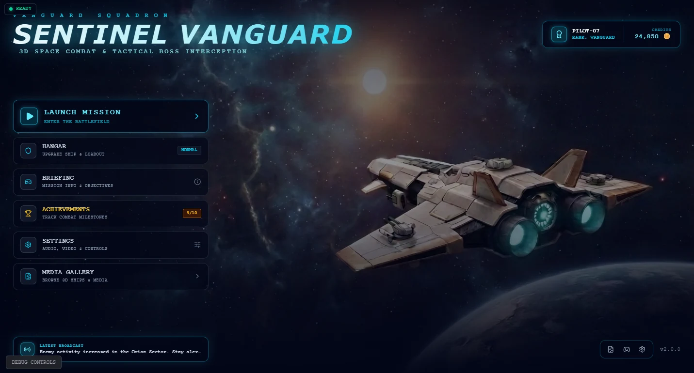

Notes · Web 3D
What 3D actually costs in a browser tab
A console gives you a known machine and a fixed budget. A browser gives you whatever GPU the visitor happens to own, an unknown tab count behind you, and no install to hide behind. These are the notes from building Sentinel Vanguard inside that constraint.
The download is part of the design
In a native game, an asset that is 40 MB is a footnote — it ships once, on a disc or in an install. In a browser it is the difference between a visitor who waits and a visitor who leaves. That single constraint reorders the whole project: model budget stops being an artistic question and becomes a loading question.
GLB is the format that makes this survivable. It is one file, it carries geometry, materials and textures together, and it compresses the way any other file on the web compresses. What it does not do is make a heavy model light — it only removes the excuses for a heavy one being slow to arrive.
Textures, not triangles, are usually the bill
The instinct is to count polygons. Polygons are rarely what kills a browser scene. A 4K texture on a small object costs memory whether or not the object is on screen, and memory is the thing a phone browser will take away from you first.
- Size textures to the screen, not to the source. A prop that occupies 80 pixels on a phone does not need a map authored for a close-up.
- Share materials between objects. The same material on twenty asteroids is one upload; twenty variants is twenty.
- Decide what is never seen. A model that only ever appears at distance can lose the detail nobody will ever resolve — and that detail is usually most of the file.
Frame budget is a rumour, not a number
On a fixed console you can state a budget: this many milliseconds, every frame. In a browser the same build runs at very different speeds on two machines that both say "modern laptop". The practical answer is to design for the slowest thing you are willing to support, and to make the game readable when it dips rather than trying to guarantee it never does.
That changes design decisions, not just technical ones. Effects that need a consistent frame rate to read — a fast projectile, a precise dodge window — are the ones to be careful with. A boss with a health bar across the top of the screen, by contrast, degrades gracefully: the bar is a number, and the number is still true when the frame rate is not.
What the shell has to do
A browser game is judged in its first three seconds, before any of the 3D matters. The title screen, the menu, the hangar where the loadout is chosen — these are the parts that have to be instant, because they are what the visitor sees while the rest is still arriving.
That is why the shell in this build carries the systems that most small games leave until last: a hangar with the ship and its loadout, a briefing, achievements that count themselves, a pilot rank and a credit balance. None of them need the renderer to be ready, and all of them make the wait feel like a game rather than a loading screen.
The project
Sentinel Vanguard is 3D space combat with a tactical layer — hangar loadouts, three weapons, shields and hull, bombs and overdrive, and bosses that arrive with their own health bar.